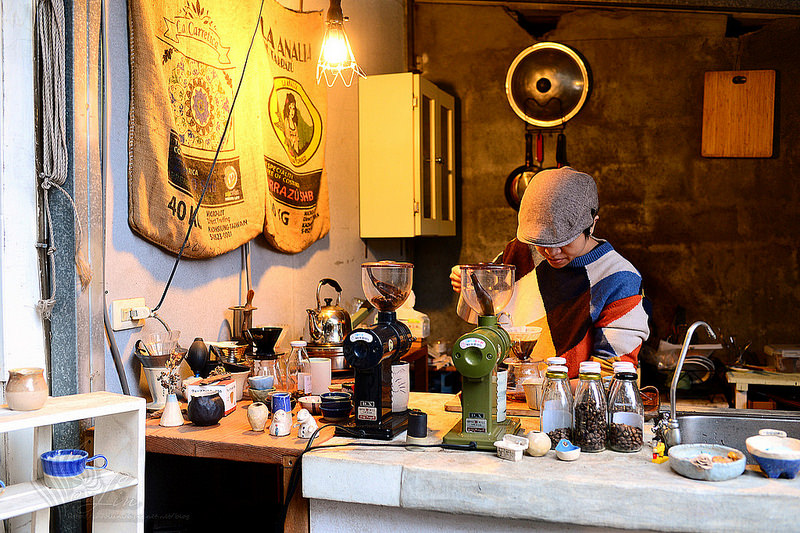

Giocare義式.手沖咖啡

2008年起，Giocare就在這裡開始，從一個未經整理的老宅地變身成現在極具特色的咖啡館, 這裡不只有提供手沖和義式咖啡，還有不定時推出的甜點,除此之外這裡還有許多手作陶器製品，每個都非常有特色呢！店內還有兩隻慵懶的貓可以玩!!上次去有看到一隻很活躍的黑貓XD Giocare (義大利文，念做 "揪嘎雷")，英文是Play，中文是播音樂,
所以這邊會一直播放著讓人很舒服的音樂，舒服到你會忘記有在放音樂這回事的那種音樂
這家店的咖啡豆也很具有特色, 上次點了一杯水洗紫風鈴耶加, 那個花香味讓我印象很深刻!! 有不少花蓮的咖啡店也都是用他們的咖啡豆唷~~
有機會來花蓮一定要來這家特色咖啡店!! 點一杯單品, 然後跟貓貓玩一整個下午吧:3
Giocare (義大利文，念做 "揪嘎雷")，英文是Play，中文是播音樂,
所以這邊會一直播放著讓人很舒服的音樂，舒服到你會忘記有在放音樂這回事的那種音樂
這家店的咖啡豆也很具有特色, 上次點了一杯水洗紫風鈴耶加, 那個花香味讓我印象很深刻!! 有不少花蓮的咖啡店也都是用他們的咖啡豆唷~~
有機會來花蓮一定要來這家特色咖啡店!! 點一杯單品, 然後跟貓貓玩一整個下午吧:3